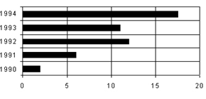
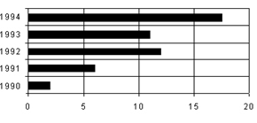

Ques Refer the graph below to answer the question.
AUTOMOBILE ACCIDENTS IN COUNTRY X: 1990 TO 1994
(in ten thousands)

CARS IN COUNTRY X
(in millions)

In which of the following years will the number of accidents exceed 500 thousand?AUTOMOBILE ACCIDENTS IN COUNTRY X: 1990 TO 1994
(in ten thousands)
CARS IN COUNTRY X
(in millions)

In which of the following years will the number of accidents exceed 500 thousand?